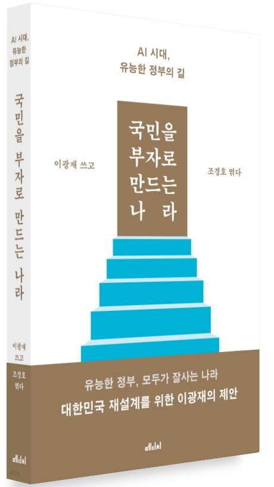
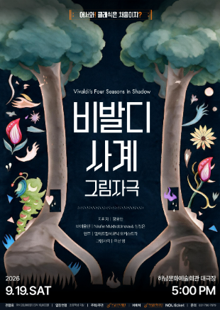
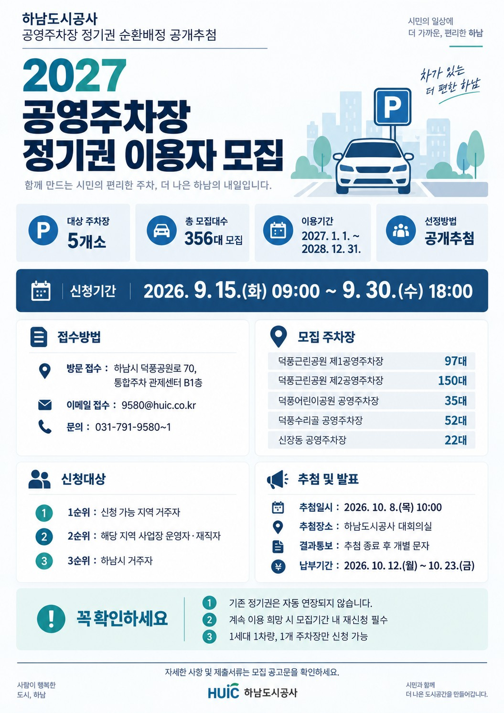

41호 | 2026년 9월 16일 발행
📌 이번 호 주요 목차
 우리동네 국회의원 이광재
우리동네 국회의원 이광재
📰 언론보도
이광재 "李지지율 빨간불 직전… 부동산 등 입장 밝혀야"
4선 중진이자 국회 예산결산특별위원장인 이광재 의원이 15일 KBS라디오 ‘전격 시사’에서 이재명 대통령의 지지율 흐름에 대해 “빨간 불 바로 직전의 주황색 불이라고 봐야 한다”고 진단하며, 공소 취소, 연임 개헌, 부동산 등 민생 현안과 정국 불확실성에 대해 대통령 기자회견을 통해 분명한 입장을 밝혀 국민적 의구심을 해소해야 한다고 강조했습니다.
📌 출처: 조선일보 (유종헌 기자)
📰 언론보도
[논설실의 서가] 이광재 의원이 밝히는 대한민국 재설계 플랜
국회 예산결산특별위원장 이광재 의원(더불어민주당)이 청와대 국정상황실장, 국회 사무총장, 강원도지사 등 입법·행정·외교 현장에서 다진 국정 경험을 바탕으로 제시하는 대한민국 지속가능 발전 전략이 서평으로 조명됐습니다. AI 문명사적 전환기와 미·중 기술 패권 경쟁 속 국가 생존과 지속가능한 마스터플랜을 차분히 담았습니다.

📌 출처: 디지털타임스 (강현철 논설위원)
📝 현장일지
[의정활동] 이광재, "국가의 성장을 국민의 삶으로"… 이형일 경제부총리 후보자 인사청문회
이형일 경제부총리 겸 재정경제부장관 후보자 인사청문회를 가졌습니다. 국가의 거시적 경제적 성장이 국민 개개인의 실질적인 삶의 질 향상과 자산 형성, 주거 및 노후 안정을 담보할 수 있도록 정책적 대안을 질의하고 재정·경제 정책의 나아갈 방향을 철저히 검증했습니다.

📌 출처: 이광재 공식 네이버 블로그
🎥 현장일지 (영상)
"망신 주기 청문회, 이제는 바꿔야 합니다" 현장 숏폼
인사청문회가 소모적인 망신 주기나 인격 모독에 그치지 않고 국정 수행 능력과 정책 검증 본연의 목적에 충실하도록 제도적 개선과 품격 있는 정치를 촉구하는 이광재 의원의 의정활동 현장 숏폼 영상입니다.
📌 출처: 이광재 공식 유튜브 (이광재 TV)
📰 하남 지역 주요 뉴스
📰 문화/축제
천년의 울림 ‘요고’와 함께… ‘2026 하남 이성산성 문화제’ 19일 개막
삼국시대 역사와 문화가 숨 쉬는 하남시 대표 향토 문화축제인 ‘2026 하남 이성산성 문화제’가 9월 19일과 20일 미사호수공원과 이성산성 일대에서 열립니다. 국내 최초 발굴 타악 유물 ‘요고’와 대북 퍼포먼스, 퓨전 국악, 신유·윤종신·비비 등 초대가수 공연과 최태성의 역사 콘서트 등 다채로운 프로그램이 펼쳐집니다.
📌 출처: 한겨레 (이정하 기자)
📰 지역경제/전통시장
하남시, 추석 앞두고 전통시장 물가안정 캠페인… 가격표시 준수 홍보
하남시가 추석 명절을 맞아 15일 신장전통시장과 덕풍전통시장 일대에서 소비자단체 회원 40여 명과 함께 전통시장 물가안정과 건전한 상거래 질서 확립 캠페인을 전개했습니다. 가격 및 원산지 표시 준수, 합리적 소비와 착한 가격 업소 이용을 집중 홍보했습니다.
📌 출처: 국제뉴스 (강정훈 기자)
📰 체육/관광
“검단산·남한산성 잇는 코스”… 12월 '하남 국제 트레일런 페스티벌' 개최
2026 연합뉴스 하남 국제 트레일런 페스티벌(YHITF)이 12월 12~13일 미사경정공원과 검단산, 남한산성 일대에서 펼쳐집니다. 황영조 감독이 디자인한 생태 수변과 산악 순환 코스로, 5·10km 로드와 15·28km 트레일 종목에서 엘리트 러너와 동호인이 함께 즐기는 대형 러닝 축제가 준비 중입니다.
📌 출처: 톱스타뉴스 (임가영 기자)
💬 하남 맘카페 HOT 이슈
2026년 9월 16일 기준 하남 지역 인터넷 커뮤니티(맘카페)에서 가장 조회수와 댓글이 높았던 핫이슈 TOP 3 소식입니다.
1️⃣ '2026 하남 이성산성 문화제' 19일~20일 미사호수공원 개막 소식에 맘카페 관심 폭발
현황: 이번 주말(9/19~20) 미사호수공원과 이성산성에서 열리는 이성산성 문화제 대형 개막 공연(윤종신, 비비, 신유, 최태성 역사콘서트)과 어린이 유물발굴 체험 부스 소식이 맘카페에서 큰 화제를 모았습니다.
💡 주민 포인트: 온 가족 무료 국악·가수 공연 관람 및 어린이 백제 문화 체험 활동.
💬 주민 반응: "이번 주말 아이들이랑 미사호수공원 필수 코스네요!", "윤종신이랑 비비도 오다니 가족 나들이로 딱입니다" 기대감 만발.
2️⃣ "우리 동네 주차난 숨통 트이나" 하남도시공사 공영주차장 정기권 순환배정 공개추첨 소식 주목
현황: 덕풍·신장·미사 등 관내 일반공영주차장 정기권 순환배정 공개추첨 신청 공고가 발표되면서 주차 공간이 부족했던 주민들 사이에서 신청 정보가 빠르게 공유되었습니다.
💡 주민 포인트: 하남시민 및 관내 사업자 대상 공정한 공영주차장 정기권 순환 배정.
💬 주민 반응: "집 근처 공영주차장 정기권 꼭 당첨됐으면 좋겠어요", "신청 일정 맘카페 덕분에 알았네요" 정보 공유 잇따라.
3️⃣ "추석 명절 장보기 안심!" 하남시 전통시장 물가안정 캠페인 & 알뜰 장보기 정보 공유
현황: 추석 명절을 앞두고 신장·덕풍전통시장에서 전개된 물가안정 캠페인과 착한가격업소 안내, 가격표시제 준수 정보가 맘카페에서 활발히 공유되었습니다.
💡 주민 포인트: 명절 차례상 알뜰 장보기 꿀팁과 전통시장 이용 정보 공유.
💬 주민 반응: "요즘 장바구니 물가 무서운데 알뜰 장보기 팁 유용하네요", "이번 주말 덕풍시장에 장 보러 갑니다" 반응 호평.
🎭 ALL IN 하남라이프
2026년 9월 16일 기준 한눈에 보는 하남시 최신 문화·행사·추석 안내 가이드
🏛️ 2026.09.19~09.20 | 축제/문화
2026 하남 이성산성 문화제 개막 (미사호수공원 & 이성산성 일원)
"하남의 역사, 미래를 두드리다! 온 가족이 함께 즐기는 K-컬처 역사문화 축제"
하남시의 대표 향토 축제인 '2026 하남 이성산성 문화제'가 9월 19일(토)부터 20일(일)까지 미사호수공원과 이성산성에서 개최됩니다.
🥁 개막 주제공연 (9.19 토 19:00~): 타악기 '요고' & 대북 울림, 미디어퍼포먼스, 퓨전 국악
🎤 초대가수 공연 (9.19 토 19:30~): 신유, 윤종신, 비비 등 정상급 가수 무대
📚 전세대 프로그램 (9.20 일): 최태성의 '역사 콘서트', 플래시몹 댄스, 3인 3색 콘서트
🎯 체험 부스: 유물발굴장, 수비대 훈련소, 요고 만들기, 백제 포토존, 플리마켓 상시 운영
하남시의 대표 향토 축제인 '2026 하남 이성산성 문화제'가 9월 19일(토)부터 20일(일)까지 미사호수공원과 이성산성에서 개최됩니다.
🥁 개막 주제공연 (9.19 토 19:00~): 타악기 '요고' & 대북 울림, 미디어퍼포먼스, 퓨전 국악
🎤 초대가수 공연 (9.19 토 19:30~): 신유, 윤종신, 비비 등 정상급 가수 무대
📚 전세대 프로그램 (9.20 일): 최태성의 '역사 콘서트', 플래시몹 댄스, 3인 3색 콘서트
🎯 체험 부스: 유물발굴장, 수비대 훈련소, 요고 만들기, 백제 포토존, 플리마켓 상시 운영
📌 출처: 하남시청 / 한겨레
🌸 ~2026.09.18 (D-2) | 교육/원데이
[지식나눔학교] 가을을 담은 바구니 플라워 원데이 클래스 추가모집
"계절 생화의 향기와 색감으로 힐링하는 나만의 가을 꽃바구니 만들기!"
하남시평생학습관에서 가을 정취를 담은 생화 꽃바구니 제작과 응원 카드 작성을 함께하는 원데이 힐링 플라워 클래스 수강생을 선착순 추가모집합니다.
📅 교육 일시: 2026년 9월 21일(월) 13:00 ~ 15:00
📍 교육 장소: 하남시평생학습관 2층 대강당 (하남대로 732)
👥 모집 대상: 성인·직장인 총 15명 (선착순 추가모집)
💰 수강료/재료비: 수강료 무료 / 재료비 30,000원
📝 신청 기간: 2026년 9월 7일 ~ 9월 18일(금) 18:00까지
하남시평생학습관에서 가을 정취를 담은 생화 꽃바구니 제작과 응원 카드 작성을 함께하는 원데이 힐링 플라워 클래스 수강생을 선착순 추가모집합니다.
📅 교육 일시: 2026년 9월 21일(월) 13:00 ~ 15:00
📍 교육 장소: 하남시평생학습관 2층 대강당 (하남대로 732)
👥 모집 대상: 성인·직장인 총 15명 (선착순 추가모집)
💰 수강료/재료비: 수강료 무료 / 재료비 30,000원
📝 신청 기간: 2026년 9월 7일 ~ 9월 18일(금) 18:00까지
📌 출처: 하남시평생학습관 / 경기도 지식(GSEEK)
🎭 2026.09.19 | 공연/가족
클래식과 함께하는 '비발디 사계 - 그림자극' 공연 (하남문화예술회관 대극장)
"클래식 연주와 빛·그림자가 선사하는 환상의 가을 클래식 극장!"
하남문화재단 기획 공연으로 4인조 앙상블의 비발디 '사계' 라이브 연주에 극단 영(YOUNG)의 환상적인 그림자극이 어우러진 온 가족 클래식 입문 음악극이 찾아옵니다.
📅 공연 일시: 2026년 9월 19일(토) 오후 5:00 (70분)
📍 공연 장소: 하남문화예술회관 대극장(검단홀)
👥 관람 연령: 초등학생 이상 관람가
🎟️ 티켓 가격: R석 2만원 | S석 1만원 (재단 카카오톡 친구 20% 할인)
☎️ 문의: 하남문화재단 031-790-7979
하남문화재단 기획 공연으로 4인조 앙상블의 비발디 '사계' 라이브 연주에 극단 영(YOUNG)의 환상적인 그림자극이 어우러진 온 가족 클래식 입문 음악극이 찾아옵니다.
📅 공연 일시: 2026년 9월 19일(토) 오후 5:00 (70분)
📍 공연 장소: 하남문화예술회관 대극장(검단홀)
👥 관람 연령: 초등학생 이상 관람가
🎟️ 티켓 가격: R석 2만원 | S석 1만원 (재단 카카오톡 친구 20% 할인)
☎️ 문의: 하남문화재단 031-790-7979

📌 출처: 하남문화재단 / 하남문화예술회관
🍁 ~2026.10.25 | 축제/행사
2026 숲속의 산성도시 - '남한산성 가을 페스타' 개최 안내
"세계유산 남한산성에서 펼쳐지는 가을 숲속 문화 축제!"
경기도남한산성세계유산센터에서 주말과 공휴일 동안 전통문화체험, 에코-히스토리 캠프, 연희 한마당, 추석 야간 특별프로그램 등 다채로운 가을 축제를 진행합니다.
📅 운영 기간: 2026년 9월 5일 ~ 10월 25일 (매주 토·일·공휴일) ※ 9.19~20 미운영
📍 행사 장소: 남한산성 일원 (행궁 등)
🎯 주 프로그램: 전통문화체험, 연희 한마당, 에코 캠프, 추석 야간 프로그램
💰 참가비: 무료 (행궁 입장료 별도 / 경기도민 무료입장)
☎️ 문의: 02-1800-4746
경기도남한산성세계유산센터에서 주말과 공휴일 동안 전통문화체험, 에코-히스토리 캠프, 연희 한마당, 추석 야간 특별프로그램 등 다채로운 가을 축제를 진행합니다.
📅 운영 기간: 2026년 9월 5일 ~ 10월 25일 (매주 토·일·공휴일) ※ 9.19~20 미운영
📍 행사 장소: 남한산성 일원 (행궁 등)
🎯 주 프로그램: 전통문화체험, 연희 한마당, 에코 캠프, 추석 야간 프로그램
💰 참가비: 무료 (행궁 입장료 별도 / 경기도민 무료입장)
☎️ 문의: 02-1800-4746
📌 출처: 경기도남한산성세계유산센터
🏛️ 공공기관 소식지
2026년 9월 16일 기준 경기도 및 하남시 공공기관 주요 공고·신청 안내입니다.
💼 하남시청 | ~2026.10.12
하남시, '2026 온세대+경기도 5070 일자리박람회' 참가기업 모집 안내
하남시가 경기도, 경기도일자리재단, 하남고용복지+센터와 협력하여 10월 30일(금) 하남종합운동장에서 열리는 '2026 하남시 온세대+경기도 5070 일자리박람회'에 참여할 구인기업(40개사)을 모집합니다.
📅 일시 및 장소: 2026년 10월 30일(금) 13:00~16:00 / 하남종합운동장 제2체육관
🏢 모집 규모: 구인기업 40개사 (직접채용 30개사, 간접채용 10개사)
📝 접수 기간: 2026년 9월 14일 ~ 10월 12일 18:00까지 (방문·팩스·이메일 접수)
☎️ 문의: 하남일자리센터 031-790-6890
📅 일시 및 장소: 2026년 10월 30일(금) 13:00~16:00 / 하남종합운동장 제2체육관
🏢 모집 규모: 구인기업 40개사 (직접채용 30개사, 간접채용 10개사)
📝 접수 기간: 2026년 9월 14일 ~ 10월 12일 18:00까지 (방문·팩스·이메일 접수)
☎️ 문의: 하남일자리센터 031-790-6890

📌 출처: 하남시청 지역경제과 / 하남일자리센터
🅿️ 하남도시공사 | 주차/공공
하남도시공사, 공영주차장 정기권 순환배정 공개추첨 모집 공고
하남도시공사에서 관내 일반 공영주차장의 공정한 이용 기회 제공 및 시민 주차 편의를 위한 '일반공영주차장 사용자(정기권) 순환배정 공개추첨' 모집을 실시합니다.
🚗 대상 시설: 관내 일반공영주차장 (덕풍·신장·미사 등)
📋 신청 대상: 하남시민 및 관내 사업장 근무자
📝 신청 방법: 하남도시공사 홈페이지 공지사항 공고문 접수
☎️ 문의: 하남도시공사 주차사업팀
🚗 대상 시설: 관내 일반공영주차장 (덕풍·신장·미사 등)
📋 신청 대상: 하남시민 및 관내 사업장 근무자
📝 신청 방법: 하남도시공사 홈페이지 공지사항 공고문 접수
☎️ 문의: 하남도시공사 주차사업팀

📌 출처: 하남도시공사
© 2026 우리동네 진짜일꾼 이광재